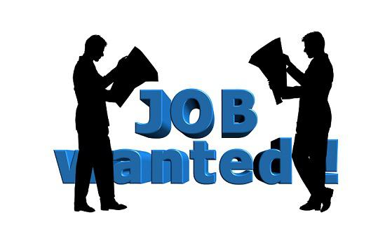

做中国领先的
人力成本优化解决方案+人力资源SAAS软件服务商
致力于用科技推动中国人力资源管理的变革
失业金是在自己没有工作的时候国家帮助提供的一笔资金支持，以确保这段时间不至于流落街头，但是并不是每一个处于职业空窗期的人员都能领取到失业金，必须要满足以下几个条件：

1、申领资格。根据失业保险条例第十四条规定：具备下列条件的失业人员，可以领取失业保险金：（一）按照规定参加失业保险，所在单位和本人已按照规定履行缴费义务满1年的（二）非因本人意愿中断就业的 （三）已办理失业登记，并有求职要求的。也就是说如果自己主动辞职，是领不到失业金的。
2、申领额度。失业人员失业前所在单位和本人按照规定累计缴费时间满1年不足5年的，领取失业保险金的期限最长为12个月；累计缴费时间满5年不足10年的，领取失业保险金的期限最长为18个月;累计缴费时间10年以上的，领取失业保险金的期限最长为24个月。重新就业后，再次失业的，缴费时间重新计算，领取失业保险金的期限可以与前次失业应领取而尚未领取的失业保险金的期限合并计算，但是最长不得超过24个月。
3、申领途径。符合失业金领取条件的，需要提供解除劳动关系的材料、身份证、户口本、照片等向参保地市社保机构申请领取失业金，失业人员经过失业登记和培训之后方能领取到失业金。一般在办理失业后次月领取，是打卡发放，按月在当地领取。具体程序由于各地办理流程不一样，建议你咨询一下当地社保机构。
以上就是关于如何申领失业金的流程，有需要领取失业保险金的朋友们需要提前知晓这些。但是失业金往往只够填饱肚子，想要指望以此保障生活的方方面面是不可能的，所以努力挣钱才是王道。